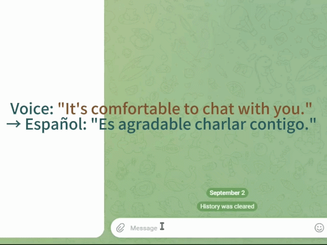
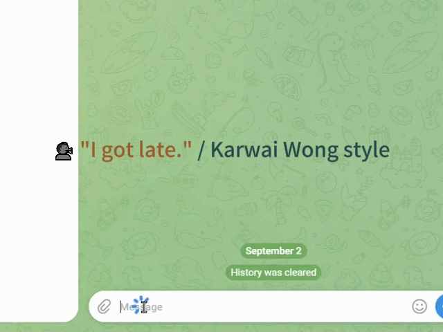
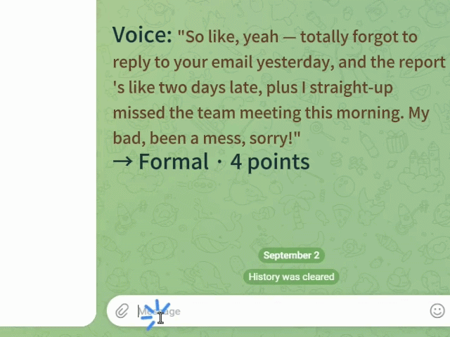

FewType puts three everyday scenarios in one small Windows app: talk instead of typing, have ebooks read aloud in a natural voice, and turn long scripts into speech files. Free and open source — you connect the AI services you choose. No subscription, no key bundled.
Press a hotkey, talk, and your words land in any text box — with translation and writing styles built in.
Explore →A browser extension reads your ebooks aloud in a natural, flowing voice — eyes get a break.
Explore →Paste a long script, pick a voice, get a clean audio file. A companion feature for creators.
Explore →Self-contained: bundles the runtime and auto-installs what's missing. Built-in auto-update.
Download Setup (.exe)Unzip and run. Includes the browser extension folder for ebook reading.
Download Portable (.zip)All releases: github.com/Ray1979ANYWAY/FewType/releases · Report an issue · Free & open source (MIT)
FewType is an indie project. It doesn't pretend to be a mature team product, and that's part of the deal.
Press a global hotkey in any app, speak, and your words land exactly where your cursor is. Beyond plain dictation, FewType can rewrite your words in a chosen writing style and translate them into another language before they hit the screen.
Chat windows, browsers, terminals, documents — one hotkey (Ctrl+Win, or double-press Ctrl) starts recording and your speech is typed where the cursor sits. No switching apps, no copy-paste.

Say it in Chinese, get English, Spanish, French, German, Japanese or Korean in the text box. The translation goes straight to the screen — no second window to manage.

Pick a style — e.g. "Karwai Wong" turns an ordinary sentence into a cinematic monologue, "Formal" turns scattered notes into a numbered, professional document. Your voice, your words, your chosen tone.

Speak several things at once and the Formal style structures them into numbered points — a sloppy thought becomes a document-ready paragraph.

It's really just two steps. The keys live on your machine and are never bundled with the app.
A browser extension reads your ebooks aloud in a natural human voice — sentences flow continuously, no robotic breaks. Works with Google Play Books and Koodo Reader.
How it works: the desktop app runs the AI voice engine; the browser extension grabs the page's book text in one click and streams it to be read aloud.
FewType uses natural neural voices with tuned sentence segmentation and synthesis, so paragraphs read smoothly and continuously — the way a real narrator would.

Long focused reading tires the eyes fast. Read with your ears during commutes, chores, or any moment your eyes are busy elsewhere.

The reader picks the voice that matches the book's language automatically, so words with multiple pronunciations are read correctly in context.
One install, then load the extension in your browser. That's it.
Paste a long script, pick a voice, and get a clean natural-sounding audio file. A companion feature that saves creators hours of recording.
Paste your draft, choose a language and a voice, hit generate — the app splits the text intelligently and synthesizes it into a single audio file in your output folder.

Input and output language differ? FewType translates the text first, then reads it — so you can paste English and get a Spanish voice-over without translating by hand.

Hundreds of neural voices across many languages, with adjustable speed and volume. Preview before you generate, then export to a file.
It's the quickest scenario — no keys, no extension.